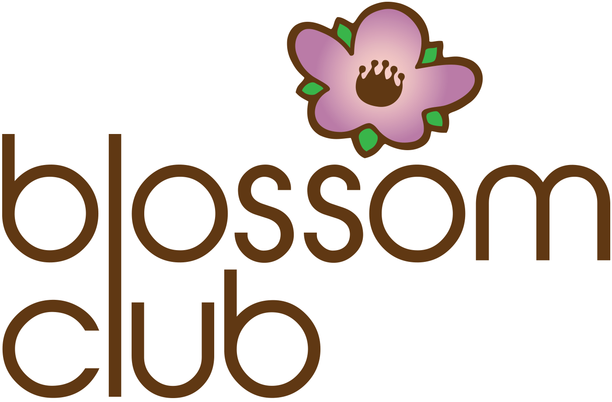

How we help children thrive
Our therapy is rooted in fun, functional and purposeful activities, with support for families and teachers in their roles too.
Individual Therapy
One-on-one occupational therapy built around your child:
- Evaluation
- Treatment sessions conducted in your home or in the clinic
Staff In-Service Training: A Sensory Approach to Learning
We are occupational therapists with a combined 20 years of pediatric experience in rehabilitation and early intervention settings. We offer staff training presentations that teach educators about the benefits of emphasizing a sensory approach in the classroom.
We provide a general overview of sensory processing, sensory dysregulation, and the problem behaviors commonly seen in children with sensory dysregulation, and we present strategies that benefit all students in the classroom. Teachers learn how to implement a research-based sensory approach to early childhood education for improved self-regulation, attention, participation, behavior and future academic success.
Presented by Amy Peterson, MS, OTR/L, and Kate Casey, MOTR/L.
“We had Amy and Kate present for our Teacher In-service day and at a Mainline Preschool Directors meeting and they were wonderful! The information they provided was on point and easy to implement into our classrooms. I highly recommend them and will use them again in the future.”
“After the engaging and informative presentation by Amy and Kate, our preschool teachers walked away with useful strategies that they immediately and effectively integrated into their classroom practices.”
“Amy, thank you once again for your presentation yesterday! I have had a lot of great feedback from my staff letting me know how much they learned and how useful that information will be in their classrooms. They especially liked the concrete suggestions you provided for implementing new strategies with specific children. We were grateful for your expertise!”
Consulting
We consult with families and teachers to support a child's success in their roles as a child, sibling, friend, student and community member.
Blossom Club
Blossom Club offers small-group training for children ages 4 to 6. In this setting, children have opportunities to develop and refine the skills they need to participate successfully in academic, social and play environments.
Sessions are 45 minutes long and consist of engaging, creative, guided play that addresses key areas of fine motor and speech and language development. Activities are structured to prepare children for independent and group activities that require self-regulation, attention and focus, successful peer interactions, conversational skills, fine motor skills, and visual and auditory processing. Art, sensory and science activities are explored in a fun and safe way, too.
We look forward to meeting you!

Not sure which is the right fit?
Get in touch and we'll talk through what your child needs.
Contact us